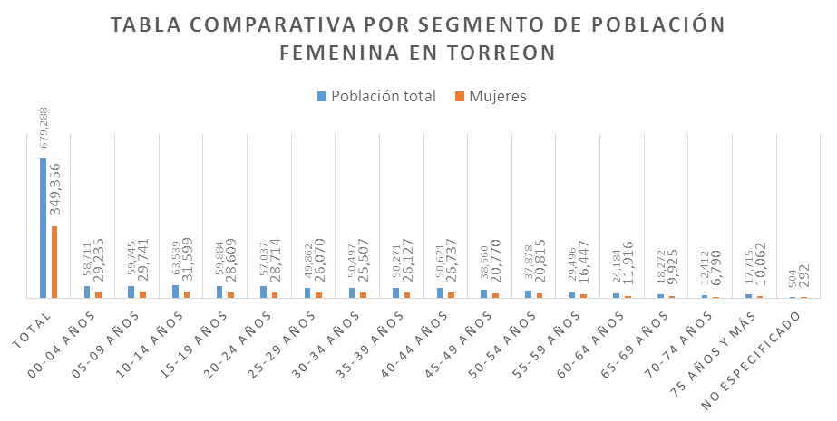

Los espacios públicos son el primer contacto que tenemos con la ciudad, es la imagen que queda grabada en la mente de las personas, la que va creando vínculos en los habitantes sobre la condición social, histórica, económica, cultural y política de un lugar. Estas imágenes van cargadas de sensaciones y percepciones que se trasmiten como referencias de unos a otros, es lo que conocemos como "la Imagen de la Ciudad".
Actualmente en Torreón existen más de 568 plazas públicas de libre tránsito, estos espacios públicos forman una de las principales infraestructuras con las que contamos en la ciudad, las que permiten una interacción entre las personas que los frecuentan.
Debido a la implementación del programa "Ciudades y Espacios Públicos seguros para las Mujeres y Niñas" en Torreón por parte de ONU Mujeres, es pertinente analizar cómo se encuentran diseñados los espacios públicos para una sana convivencia donde las mujeres y niñas tengan acceso a lugares libres de violencia.
El espacio público es el lugar común, que tenemos los ciudadanos para relacionarnos, donde se configura y se expresa la cultura de una comunidad; estos lugares son la calle, las plazas, los parques, espacios deportivos, así como los mercados, teatros, edificios gubernamentales, cines, lugares de esparcimiento y ocio.
Pero en la ciudad existen también los espacios privados de uso público, restringido, estos espacios se localizan en áreas de nivel socioeconómico más alto; resguardados dentro de fraccionamientos cerrados, dejando solo para el libre tránsito una exclusiva red vial que conecta los accesos a estos espacios privados, convirtiendo esta red en un lugar inseguro por carecer de un diseño adecuado que permita la integración del ciudadano al espacio y a las diferentes formas de movilidad.
El programa ONU Mujeres recomienda en el diseño y planeación de espacios públicos que fortalecen la equidad de género, aspectos como: Visibilidad adecuada alrededor del área, que algunas áreas de juego estén cercanas a las casas adyacentes para permitir el monitoreo social, un trazado espacial claro de todo el parque y las zonas de juego.
Asimismo se recomienda que las ciudades cuenten con áreas de juego multifuncionales, es decir, áreas especiales para actividades preferidas por las niñas tales como voleibol, por ejemplo. Estas acciones deben evaluarse según sea el caso para incluirse en la planificación y diseño en los espacios públicos de las ciudades, aunado a políticas públicas integrales eficaces con programas de seguridad con campañas que promuevan la denuncia, el respeto de los derechos de las mujeres y las niñas, que ayuden a fortalecer los vínculos sociales y culturales entre las personas.
Prevenir la violencia en la ciudad
El espacio público es uno de los lugares donde se presenta varias formas de violencia, esta percepción varía de acuerdo al grupo social, edad y género; en las mujeres una forma de violencia se presenta a través del acoso y el hostigamiento que va desde una agresión verbal en forma de piropo hasta sus más denigrantes expresiones, teniendo graves repercusiones para mujeres y niñas, afectando su manera de vivir el espacio, lo que genera profundas desigualdades en el uso y disfrute de los bienes y equipamientos que la ciudad brinda.
La percepción que se genera es de un profundo miedo e inseguridad al recorrer las calles para desarrollar actividades cotidianas como ir a la escuela, o al trabajo, propiciando la falta de apropiación de estas. Es importante destacar que la violencia hacia las mujeres y las niñas es un problema social profundo que debe trabajarse de forma integral; el espacio público es solo un escenario más de esta manifestación.
La población urbana en Torreón a 2015 es de 679,288 habitantes, de los cuales 329,932 son hombres que representa el 48.5% y 349,356 son mujeres que representan el 51.42%, un poco más de la mitad del total de la población. Por tal razón deben analizarse las necesidades intereses y propuestas específicas con perspectiva de género para integrarlas al diseño del espacio público.
Las calles, parques y plazas son la principal infraestructura social que establece la diferencia entre ciudades y barrios de calidad, de ahí la importancia que sean iluminados, arbolados, caminables, seguros, accesibles, limpios, ordenados y conectados, complementados con programas de administración, conservación y mantenimiento.

El programa "Ciudades y Espacios Públicos seguros para las Mujeres y las Niñas" de ONU Mujeres consta de varias etapas como son:
- Elaboración de un diagnóstico que permita conocer de forma cuantitativa el problema en la ciudad, en calles, plazas y transporte público.
- Referenciar geográficamente las zonas que serán intervenidas por este programa.
- Diseñar las acciones y programas en estos espacios públicos de acuerdo a casos de éxito en otras ciudades de américa latina.
- Iniciar campañas de NO + Violencia a Mujeres y Niñas que permita disminuir la violencia y aumentar la cultura de la denuncia.
- Evaluacion y seguimiento del programa, basado en el monitoreo de buenas prácticas que garantice la pertinencia y calidad del mismo.